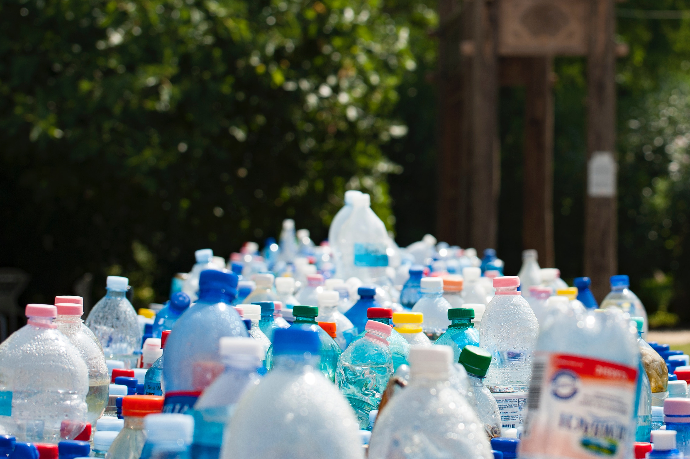
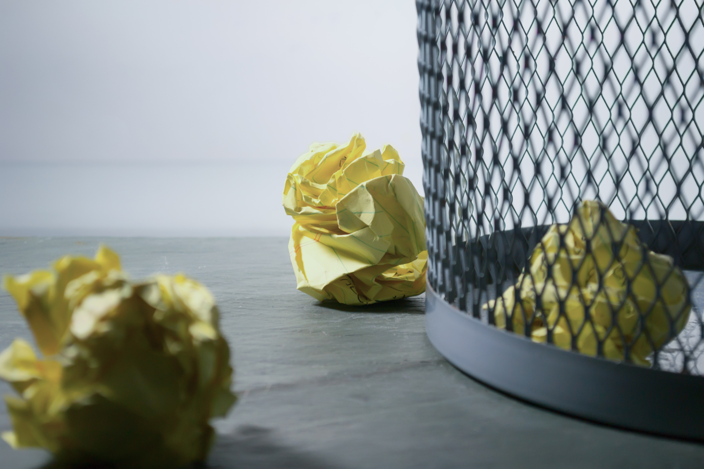
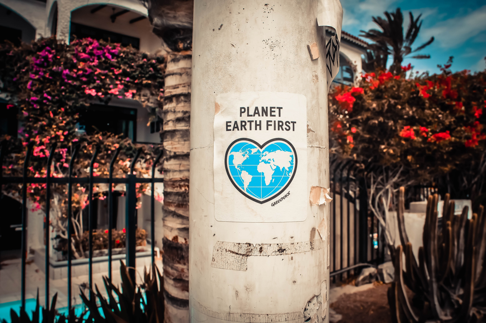

Ekologija
Ekologija je prirodna znanost koja proučava odnose među živim organizmima, kao i njihov utjecaj na okoliš u kojem obitavaju, te utjecaj tog okoliša na njih. Iako se razvila kao grana biologije, ekologija se, osim onih iz biologije, koristi i saznanjima iz kemije, fizike, matematike, te brojnih drugih prirodnih znanosti.
Ovaj se pojam često nepravilno koristi pri opisivanju aktivnosti vezanih uz zaštitu prirode. Ekologija nije zaštita prirode, ali se njena saznanja koriste pri zaštiti prirode, kao i saznanja iz drugih prirodnih znanosti i matematike. Pojam ekologije - Ekologija je široko područje koje obuhvaća mnogo poddisciplina. Uobičajena, široka klasifikacija, koja kreće od najniže do najviše razine složenosti, gdje je složenost definirana kao broj članova (entiteta) i procesa unutar sustava koji se proučava, jest sljedeća: Pročitajte više

Energija
Ušteda električne energije ne samo da pomažemo okolišu, nego pomažemo i sebi, jer smanjujemo mjesečne troškove režija. U današnje moderno doba život bez električne energije je nezamisliv. Električnu energiju koristimo u svakodnevnim aktivnostima, za rasvjetu, pripremu i čuvanje hrane, zabavu, pripremu potrošnje tople vode, katkad i za grijanje odnosno hlađenje prostora te razne druge uređaje koje koristimo. Zadnjih godina se potrošnja električne energije na globalnoj razini višestruko povećala, a svi znamo koliko je proces proizvodnje i distribucije električne energije štetan za okoliš. Prilikom kupnje novog kućanskog uređaja najbolje je kupiti onaj energetske klase A, koji može ostvariti značajne uštede električne energije u odnosu na uređaje niže klase. Pročitajte više

Reciklaža
Nepotrebno bacanje hrane događa se u čitavom lancu opskrbe hranom: u fazama proizvodnje, prerade, distribucije, prodaje i potrošnje. Prema dosadašnjim spoznajama se na globalnoj razini oko trećine proizvedene hrane za prehranu ljudi izgubi ili nepotrebno baci, što je približno 1,3 milijarde tona, a financijski je gubitak oko 680 milijardi US$ u razvijenim zemljama odnosno 310 milijardi u zemljama u razvoju. Osim gospodarskog troška, bacanje hrane je i trošak povezan s okolišem. Gospodarski trošak ne uključuje samo trošak povezan s vrijednošću samog proizvoda, nego i troškove povezane s proizvodnjom, prijevozom i skladištenjem nepotrebno bačenih proizvoda te troškove njihove obrade. Pročitajte više
Lokacije kanti za reciklažu pogledajte ovdje

Bacanje hrane
Nepotrebno bacanje hrane događa se u čitavom lancu opskrbe hranom: u fazama proizvodnje, prerade, distribucije, prodaje i potrošnje. Prema dosadašnjim spoznajama se na globalnoj razini oko trećine proizvedene hrane za prehranu ljudi izgubi ili nepotrebno baci, što je približno 1,3 milijarde tona, a financijski je gubitak oko 680 milijardi US$ u razvijenim zemljama odnosno 310 milijardi u zemljama u razvoju. Osim gospodarskog troška, bacanje hrane je i trošak povezan s okolišem. Gospodarski trošak ne uključuje samo trošak povezan s vrijednošću samog proizvoda, nego i troškove povezane s proizvodnjom, prijevozom i skladištenjem nepotrebno bačenih proizvoda te troškove njihove obrade. Kad je riječ o okolišu, nepotrebnim bacanjem hrane se troše resursi uloženi tijekom životnog ciklusa proizvoda, primjerice zemljište, voda, energija i ostali, te se posljedično povećavaju emisije stakleničkih plinova. Pročitajte više

Organizacije
Listu organizacija pogledajte ovdje
